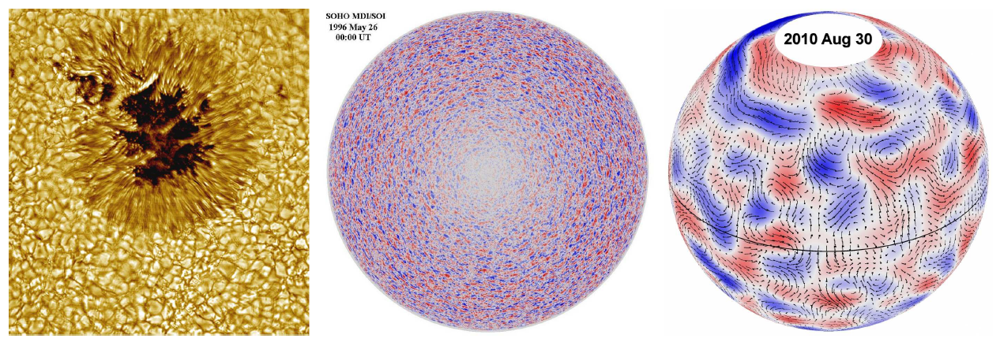
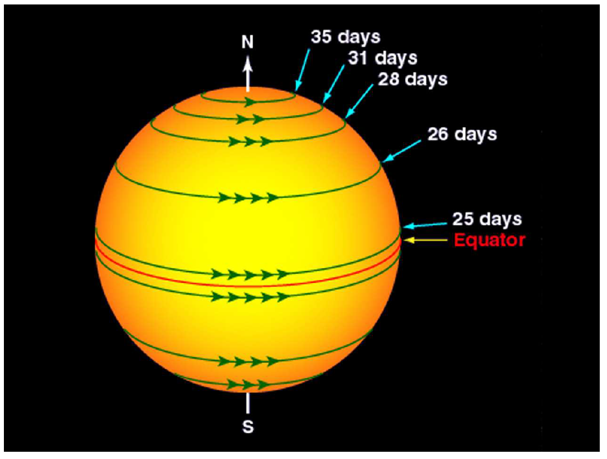
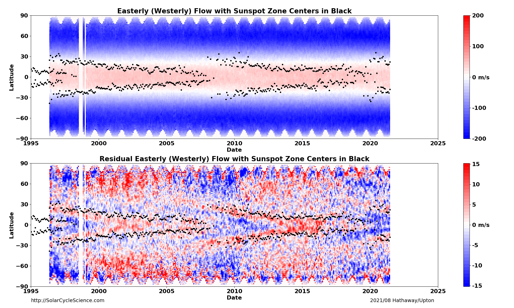
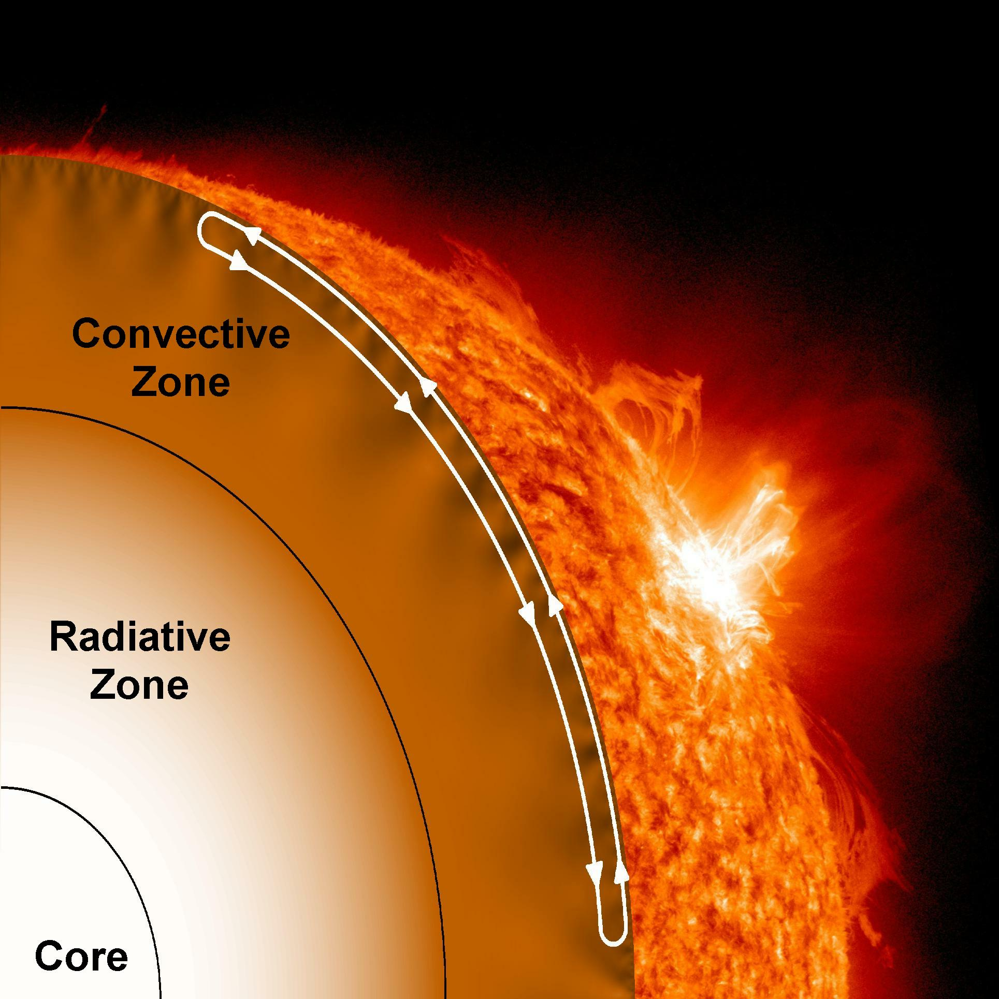
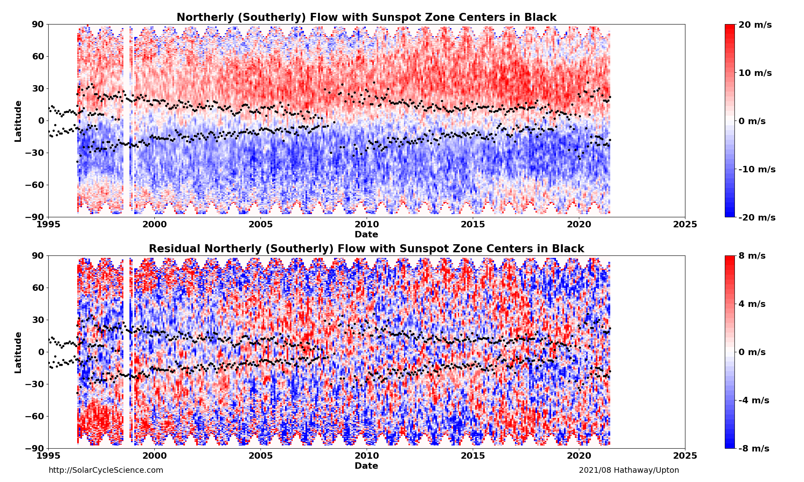

<!DOCTYPE html>
<html lang="en">
<head><meta http-equiv="Content-Type" content="text/html; charset=utf-8">
</head>
<body>
<p></p>

<p></p>

<p></p>

<p></p>
</body>
</html>
<p><br />
<title>Discover the Sun!</title>
</p>
<link href="bin" rel="shortcut icon" /><!-- Core CSS -->
<link href="css/solarcycle2.css" rel="stylesheet" /><!-- Custom CSS -->
<link href="css/solarcycle3.css" rel="stylesheet" />
<link href="css/solarcycle4.css" rel="stylesheet" /><!-- Custom Fonts --><!-- Page Content -->
<div class="container"><!-- Page Heading/Breadcrumbs -->
<h1 class="BoldBlueHeader" style="height: 39px">&nbsp; Solar Cycle Science <small>Discover the Sun!</small></h1>

<div class="row">
<div class="col-lg-12">
<ol class="breadcrumb">
	<li><a href="index.html">Home</a></li>
	<li class="active">Surface Flows Page</li>
</ol>
</div>
</div>
<!-- /.row --><!-- Content Row -->

<div class="row"><!-- Sidebar Column -->
<div class="col-md-3">
<div class="list-group"><a class="list-group-item" href="index.html">Home</a> <a class="list-group-item" href="basics.html">Basics</a> <a class="list-group-item" href="activeregions.html">Active Regions</a> <a class="list-group-item" href="flows.html">Surface Flows</a> <a class="list-group-item" href="flowprofiles.html">Axisymetric Flow Profiles</a> <a class="list-group-item" href="giantcells.html">Giant Cell Maps</a> <a class="list-group-item" href="polarfields.html">Polar Fields</a> <a class="list-group-item" href="solarcycle.html">Solar Cycles</a> <a class="list-group-item" href="aft.html">Advective Flux Transport</a> <a class="list-group-item" href="baseline.html">Baseline Maps</a> <a class="list-group-item" href="forecasts.html">Predictions</a> <a class="list-group-item" href="media.html">Media</a> <a class="list-group-item" href="people.html">People</a> <a class="list-group-item" href="more.html">More</a></div>
</div>
<!-- Content Column -->

<div class="col-md-9" style="left: 0px; top: 0px">
<h2 class="BlueHeader">Discover the Surface Flows!</h2>

<div class="Blue1_darkBG">Motions of magnetic flux on the surface of the Sun are characterized by three primary modes of transport: <a href="#Convection">convective flows</a>, <a href="#DR"> differential rotation</a>, and <a href="#MF"> meridional flow</a>. Supergranular flows are cause by convection in the Sun. These turbulent flows are the most complex of the surface flows, acting on multiple scales and in all directions. Both differential rotation and meridional flow are axisymmetric. Differential rotation describes the longitudinal motion, while meridional flow describes the latitudinal motion<br />
<br />
The Supergranular flows produce cellular velocities on the order of 500 m/s. Differential rotation produces a relative longitudinal velocity of about 200-250 m/s at the surface of the Sun. However, meridional flow speeds are only on the order of 10-20 m/s. This very weak flow has been one of the most elusive to measure and characterize, yet it plays a very significant role in regulating the solar activity cycle.</div>
</div>

<div class="col-md-12" style="left: 0px; top: 0px"><a name="Convection"></a>

<h2 class="BlueHeader">Discover Convection!</h2>

<div class="Blue1_darkBG ">Convection is a product of the large temperature gradient in the Sun&rsquo;s convection zone. This temperature gradient causes the plasma to rise and fall like boiling water. The sizes of these convective cells span two to three orders of magnitude: from granules with diameters of ~1000 km, to supergranules with diameters of ~30,000 km, and to giant cells with diameters of ~200,000 km. These cells also have a range of lifetimes. Granules have lifetimes of only 10 minutes, while supergranules have lifetimes of many hours. The flows within these cells varies as well. Granules have internal velocities of ~3000 m/s, whereas supergranules have internal velocities of ~500 m/s.
<div class="BGCaption">
<figure>
<figcaption>Convection Cells. Granules (left) have diameters of ~1000 km, velocities of ~3000 m/s, and lifetimes of ~10 minutes. Supergranules (middle) have diameters of ~30,000 km, velocities of ~500 m/s, and lifetimes of about a day. Giant cells (right) have diameters of ~200,000 km, velocities of ~10 m s&minus;1, and lifetime of a couple months.</figcaption>
</figure>
</div>
As an aside, it should be noted that convective cells span the entire range of sizes between granules and giant cells. Granules and giant cells are distinct features because they represent the smallest and largest convective structures observed on the Sun. Both granules and supergranules are distinct because they produce the peaks in the distribution of convective cells as a function of size, i.e., these are the most prevalent convective structures. While some solar physicists refer to &quot;mesogranule&quot; structures between granules and supergranules, these structures occur at a dip in the power spectra. Furthermore, mesogranules have yet to exhibit any unique physical significance.<br />
<br />
Granules are the smallest convective structures on the Sun. Sir William Herschel first noted their existence in 1794. Granules exist at the top of the photosphere and represent the boundary between convective heat transport of the interior and radiative cooling of the optically thin atmosphere of the Sun.<br />
<br />
Supergranules were discovered by Leighton et al. (1962), who had been investigating the Zeeman effect in solar spectral lines. The intense magnetic field in the Sun causes certain spectral lines to split with different polarization on the red and blue wings. By photographically combining spectroheliograms of the Sun from the red and blue wings of a spectral line, velocity (Doppler) maps of the surface of the Sun were produced. They compared velocity maps taken at different intervals with respect to one another and discovered oscillations on the surface of the Sun. These oscillations seemed to occur on a time scale of about five minutes. These oscillations were origionally attributed to acoustic waves (seismic activity) in the Sun. We now know that the convective motions produce sound waves that interact with one another and reflect off the surface of the Sun. Interference causes waves to combine or cancel with one another, amplifying some modes and diminishing others. The study of these waves is known as helioseismology. The peak of the power spectrum occurs at 3mHz, corresponding to oscillations that have periods of five minutes, i.e., 5-minute oscillations. (These features are sometime referred to as p-modes because pressure is the restoring force that drives the acoustic waves that cause these oscillations.) Once solar physicists were able to remove the signal due to the 5-minute oscillations from the Doppler pattern (by adding together Doppler images taken several minutes apart), a new cellular pattern (supergranulation) was unveiled on the surface of the Sun.<br />
<br />
Supergranules play a crucial role in magnetic flux transport. Observations have shown that as the plasma spreads out from the cell centers, small magnetic elements are transported to the boundaries of each convective cell, producing a cellular pattern, or magnetic network on the surface of the Sun. The magnetic elements remain trapped within the lanes in between supergranules, where they are shuffled around by the motion of the supergranules themselves.<br />
<br />
Following the discovery of supergranules, solar physicists predicted that solar convection would create much larger convective cells, giant cells, that would extend to the base of the convection zone and form a larger network. These giant cells, with lifetimes on the order of months, would be heavily influenced by the Sun&rsquo;s rotation. The giant cells were expected to transport angular momentum to the equator, driving the differential rotation of the Sun.In the decades that followed, observations hinted at the existence of these convective structures, but direct observations remained elusive until 2013 when there signature was detected by tracking the motion of the Supergranules.</div>
</div>

<div class="col-md-12" style="left: 0px; top: 0px"><a name="DR"></a>

<h2 class="BlueHeader">Discover Differential Rotation!</h2>

<div class="Blue1_darkBG">Differential rotation was first noticed in 1610 by Christoph Scheiner by observing the motions of sunspots. He found that some sunspots were able to complete a full rotation in 25 days, while others took closer to 28 days. This inconsistency led him to the realization that the Sun experiences differential rotation, i.e the rate of rotation depends on latitude. By the late 1850&rsquo;s, Richard C. Carrington had accurately tracked and recorded the motions of sunspots on the Sun. (By doing so, he was able to determine that the rotational axis of the Sun was tilted by about 7.25 degrees with respect to the ecliptic.) In order to create a standard of reference, Carrington calculated the average synodic (as viewed from the Earth orbiting the Sun) rotation rate of the Sun. A full rotation of the Sun (27.2753 days) is now know as a Carrington Rotation.
<div class="BGCaption">
<figure class="text-center">
<figcaption>Surface Differential Rotation. The Sun is not a solid body and rotates at different rates depending on latitude and depth, i.e., differential rotation. The Sun undergoes one full rotation in about 25 days at the equator, but in about 36 days at the poles. Credit: NASA</figcaption>
</figure>
</div>
Direct Doppler measurements of the differential rotation have revealed a minor variability over the <a href="solarcycle.html">solar cycle</a>. This is best seen by calculating the differential rotation for many Carrington Rotation. The average rotation rate is then subtracted from these measurements, leaving behind the residual. By plotting the residual rotation as a function of time, an oscillating pattern emerges. The excess velocities (with magnitudes of ~7 m/s or ~3% of the full differential rotation velocity range) created a chevron-like pattern that alternates between slower and faster flows at a given latitude, with a period of about 11 years. These are referred to as the torsional oscillations.

<div class="BGCaption">
<figure class="text-center">
<figcaption>Top panel: Differential Rotation History. Bottom panel: Torsional Oscillations (residual east-west flow). An average differential rotation (east-west flow) profile has been subtracted from the individual differential rotation profiles and plotted as a function of time from 1996 to the present, revealing the torsional oscillations. Westward flow (slower relative to the average) is indicated by blue and eastward flow (faster relative to the average) is indicated by red. The centroid positions of the sunspot area are shown in black for each hemisphere for reference.</figcaption>
</figure>
</div>
In the last few decades, helioseismology has revealed a great deal about the internal structure of the Sun, including the variation of rotation through the convection zone. Below the surface, the rotation rate increases down to a depth of about 0.95 of the solar radius (a.k.a R_Sun). This region is known as a surface shear layer. At a depth of about 0.7R_Sun (i.e the base of the convection zone), the rotation rates at different latitudes merge and the Sun rotates like a solid body interior to that depth. A second shear layer is present in this transitionary region (known as the tachocline). Measurements have also shown that the torsional oscillations extend deep into the convection zone.</div>
</div>

<div class="col-md-12" style="left: 0px; top: 0px"><a name="MF"></a>

<h2 class="BlueHeader">Discover Meridional Flow!</h2>

<div class="Blue1_darkBG">
<p>Babcock (1961) hypothesized the existence of a meridional flow (a.k.a. meridional circulation) and suggested that it could cause magnetic fields to cancel across the equator and also transport the excess flux to the poles. Shortly after, Leighton (1964) discovered the existence of supergranules and suggested that the diffusive random walk motions of the supergranules were sufficient to transport magnetic flux to the poles. It was not until 1982 that solar physicists were actually able to use observations to actually measure this very weak (~10 m/s) poleward flow. Over the next decade and a half, new measurements of the meridional flow began to trickle in. Most measurements were made by using magnetograms to track the motions of different features on the Sun. Some tracked the motions of <a href="activeregions.html">sunspots</a> or active regions. Some tracked the motions of small magnetic elements or the large scale patterns in the magnetic fields. Others used the Doppler signal to obtain flow velocities. However, these results often conflicted in not only the magnitude of the meridional flow, but also the direction.<br />
<br />
Around the turn of the millennium, a consensus about the meridional flow began to appear. The meridional circulation is now accepted to have a peak velocity between 10-20 m/s poleward at the surface. While there has been speculation that counter-cells (i.e., a cell of meridional circulation with equatorward flows at the surface) might exist at the poles, so far the evidence has been conflicting and their existence is still uncertain. For several decades now, the equatorward meridional return flow was thought to occur at the base of the convection zone. However, recent observations have upended this notion, finding that the meridional return flow occurs at depths of around 60 Mm (i.e. 60 x 10<sup>6</sup> meters). This has created a major paradigm shift for dynamo modelers who have depended on the meridional flow to act as a conveyor belt of magnetic flux returning at the base of the convection zone (~0.7R_Sun, or a depth of ~200Mm) to regulate the solar cycle.</p>

<p></p>

<p>Meridional Circulation and the Sun&#39;s interior structure. The meridional flow is poleward at the Sun&#39;s surface with rising motions at the equator and sinking motions at the poles. The equatorward return flow occurs at the base of the Sun&#39;s surface shear layer - about 60 Mm below the surface.</p>

<div class="BGCaption">
<figure class="text-center">
<figcaption>Top panel: Meridional (North-South) Flow History. Bottom panel: Residual Meridional Flow with average profile removed. The meridional flow velocity of the network magnetic elements is plotted as a function of time from 1996 to the present, revealing the poleward flow and its variations. Southward&nbsp;flow&nbsp;is indicated by blue and northward&nbsp;flow&nbsp;is indicated by red. The centroid positions of the sunspot area are shown in black for each hemisphere for reference. The residual flow pattern shows a slowdown of the poleward flow in the active latitudes (those surrounding the sunspots).</figcaption>
</figure>
</div>
</div>
</div>
</div>
<!-- /.row -->

<hr /><!-- Footer -->
<footer>
<div class="row">
<div class="col-lg-12">
<p class="Copyright">Copyright &copy; SolarCycleScience.com 2020</p>
</div>
</div>
</footer>
</div>
<!-- /.container -->